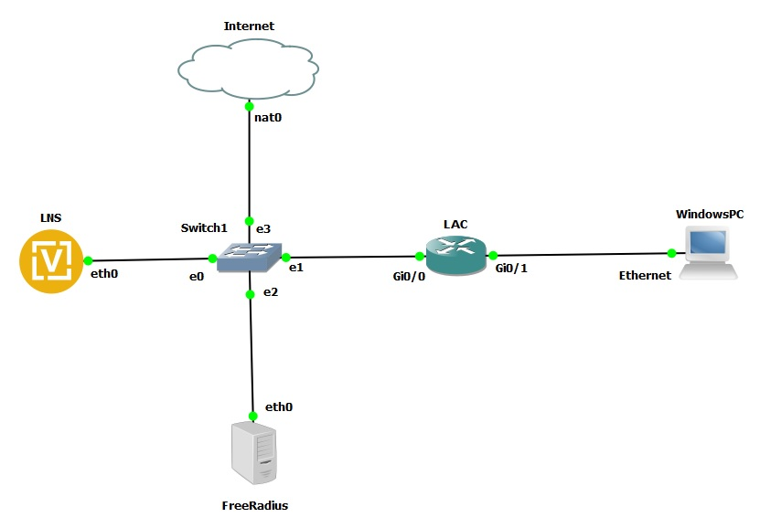
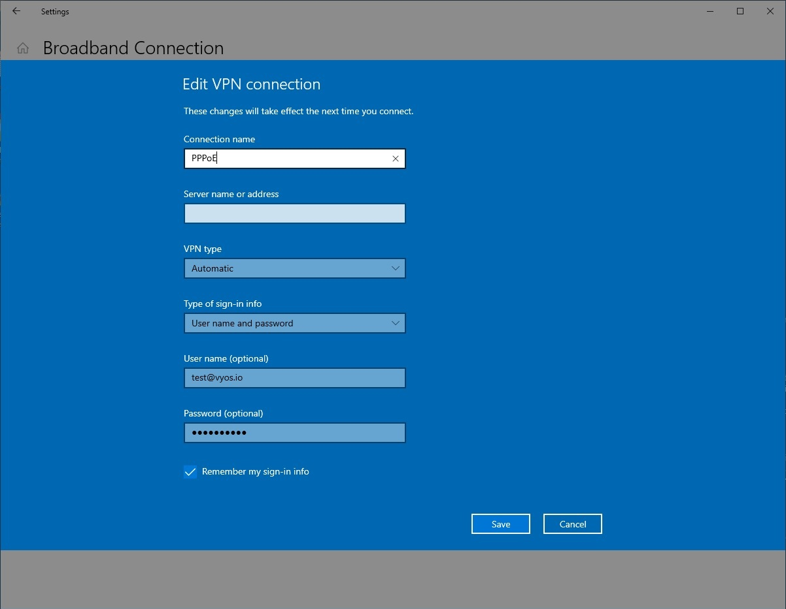

PPPoE over L2TP
This document is to describe a basic setup using PPPoE over L2TP. LAC and LNS are components of the broadband topology. LAC - L2TP access concentrator LNS - L2TP Network Server LAC and LNS forms L2TP tunnel. LAC receives packets from PPPoE clients and forward them to LNS. LNS is the termination point that comes from PPP packets from the remote client.
In this example we use VyOS 1.5 as LNS and Cisco IOS as LAC. All users with domain vyos.io will be tunneled to LNS via L2TP.
Network Topology
{kind=link}
Configurations
LAC
aaa new-model
!
aaa authentication ppp default local
!
vpdn enable
vpdn aaa attribute nas-ip-address vpdn-nas
!
vpdn-group LAC
request-dialin
protocol l2tp
domain vyos.io
initiate-to ip 192.168.139.100
source-ip 192.168.139.101
local name LAC
l2tp tunnel password 0 test123
!
bba-group pppoe MAIN-BBA
virtual-template 1
!
interface GigabitEthernet0/0
description To LNS
ip address 192.168.139.101 255.255.255.0
duplex auto
speed auto
media-type rj45
!
interface GigabitEthernet0/1
description To PPPoE clients
no ip address
duplex auto
speed auto
media-type rj45
pppoe enable group MAIN-BBA
!
LNS
set interfaces ethernet eth0 address '192.168.139.100/24'
set nat source rule 100 outbound-interface name 'eth0'
set nat source rule 100 source address '10.0.0.0/24'
set nat source rule 100 translation address 'masquerade'
set protocols static route 0.0.0.0/0 next-hop 192.168.139.2
set vpn l2tp remote-access authentication mode 'radius'
set vpn l2tp remote-access authentication radius server 192.168.139.110 key 'radiustest'
set vpn l2tp remote-access client-ip-pool TEST-POOL range '10.0.0.2-10.0.0.100'
set vpn l2tp remote-access default-pool 'TEST-POOL'
set vpn l2tp remote-access gateway-address '10.0.0.1'
set vpn l2tp remote-access lns host-name 'LAC'
set vpn l2tp remote-access lns shared-secret 'test123'
set vpn l2tp remote-access name-server '8.8.8.8'
set vpn l2tp remote-access ppp-options disable-ccp
Note
This setup requires the Compression Control Protocol (CCP)
being disabled, the command set vpn l2tp remote-access ppp-options disable-ccp
accomplishes that.
Client
In this lab we use Windows PPPoE client.
{kind=link}
Monitoring
Monitoring on LNS side
vyos@vyos:~$ show l2tp-server sessions
ifname | username | ip | ip6 | ip6-dp | calling-sid | rate-limit | state | uptime | rx-bytes | tx-bytes
--------+--------------+----------+-----+--------+-----------------+------------+--------+----------+-----------+----------
l2tp0 | test@vyos.io | 10.0.0.2 | | | 192.168.139.101 | | active | 00:00:35 | 188.4 KiB | 9.3 MiB
Monitoring on LAC side
Router#show pppoe session
1 session in FORWARDED (FWDED) State
1 session total
Uniq ID PPPoE RemMAC Port VT VA State
SID LocMAC VA-st Type
1 1 000c.290b.20a6 Gi0/1 1 N/A FWDED
0c58.88ac.0001
Router#show l2tp
L2TP Tunnel and Session Information Total tunnels 1 sessions 1
LocTunID RemTunID Remote Name State Remote Address Sessn L2TP Class/
Count VPDN Group
23238 2640 LAC est 192.168.139.100 1 LAC
LocID RemID TunID Username, Intf/ State Last Chg Uniq ID
Vcid, Circuit
25641 25822 23238 test@vyos.io, Gi0/1 est 00:05:36 1
Monitoring on RADIUS Server side
root@Radius:~# cat /var/log/freeradius/radacct/192.168.139.100/detail-20240221
Wed Feb 21 13:37:17 2024
User-Name = "test@vyos.io"
NAS-Port = 0
NAS-Port-Id = "l2tp0"
NAS-Port-Type = Virtual
Service-Type = Framed-User
Framed-Protocol = PPP
Calling-Station-Id = "192.168.139.101"
Called-Station-Id = "192.168.139.100"
Acct-Status-Type = Start
Acct-Authentic = RADIUS
Acct-Session-Id = "45c731e169d9a4f1"
Acct-Session-Time = 0
Acct-Input-Octets = 0
Acct-Output-Octets = 0
Acct-Input-Packets = 0
Acct-Output-Packets = 0
Acct-Input-Gigawords = 0
Acct-Output-Gigawords = 0
Framed-IP-Address = 10.0.0.2
NAS-IP-Address = 192.168.139.100
Event-Timestamp = "Feb 21 2024 13:37:17 UTC"
Tmp-String-9 = "ai:"
Acct-Unique-Session-Id = "ea6a1089816f19c0d0f1819bc61c3318"
Timestamp = 1708522637